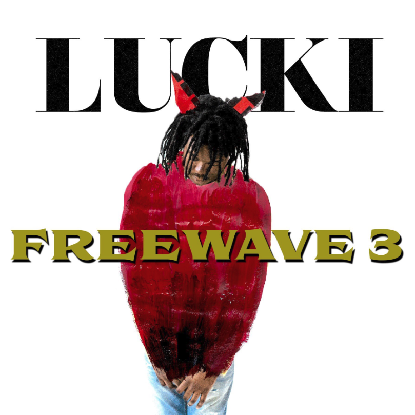

Lucki
Lucki Camel, professionally known as Lucki, is an American rapper and record producer from Chicago, Illinois. He came to public attention in 2013, after receiving rrecognition for his debut project, Alternative rap. He followed with a number of projects, including his debut studio album Freewave 3 (2019); he later followed with the mixtapes Days B4 III (2019) and Almost There (2020) after signing to record label Empire.
Lucki went on to eclipse mainstream prominence with the singles "New Drank" and "Super Urus"; The latter served as the lead single to Lucki's second studio album Flawless Like Me (2022), which debuted at number 12 on the Billboard 200. Lucki's third studio album, S*x M*ney Dr*gs (2023), went on to debut at number 15.
Top Albums
Freewave3
This is the third tape and first album in LUCKI’s Freewave tape collection. With Freewave 3, LUCKI goes in-depth on his personal struggles and successes with drugs, women, and fake love. The album is tied to a year of LUCKI’s life while he had moved from Chicago to NYC to be with a woman. The album is tied to a year of LUCKI’s life while he had moved from Chicago to NYC to be with a woman. In an interview with Pitchfork, LUCKI states: So the first half of Freewave 3 was recorded while you were in love and the second half while you were heartbroken? Yeah, the stuff I say about her on there is so real, bro. I guess the album is really about her. I even say her name in it! And it’s not like I wish it never happened—I made some of my best music from it. It’s funny though, I always used to get in trouble with girls for saying personal shit in the songs they would be like, “What the fuck, that’s OD personal?!”
Read More...Watch My Back

Watch My Back is Lucki’s fourth project, being a follow-up to days be4 storm. The album was first mentioned on December 9, 2016 with the release of the lead single “Options”. Upon the failed release of Watch My Back, he would release the second single “Leave With You” on January 6, 2017. The album’s third single, titled “New to Me”, was released on February 8, 2017. A month later, Lucki would release a back-to-back single with “No Wok” and “Komfortable” on March 17, 2017 and March 18, 2017 respectively
Read More...Body High
This tape shows the progression of Lucki form drug dealer to drug user. Instead of rapping about how he knows the ins and outs of the streets, he decided to go into detail about his personal habits and his growing Xanax habit/addiction. Definitely a more introspective tape. The first mention of this album comes along the release of the single “Reflections,” where the tag and description used BODYHIGH. On June 13, 2014, the second single “Xan Cage” was released along with a music video. On July 6, 2014, the third and final single “Finesse” was conceived, along with this release, the mixtape was announced to be due July 18th.
Read More...